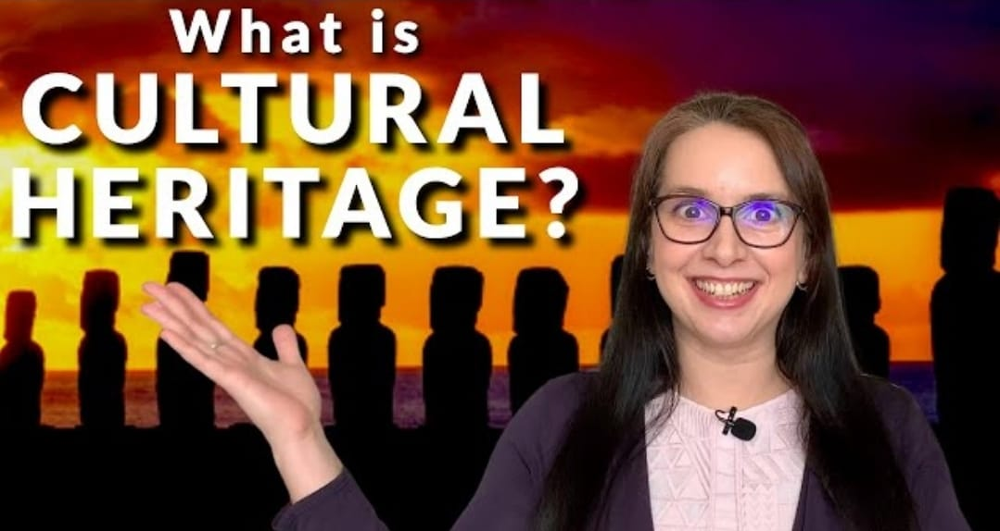

What is CULTURAL HERITAGE?
Cultural heritage keeps us connected with our traditions, customs, religion, beliefs and community identities. It is also what gives each community and the country on the whole, its individual identity. Cultural heritage is also something that gives the people a sense of unity and helps them understand their origins.
Why we need to preserve it?
It is important to preserve our cultural heritage, because it keeps our integrity as a people. The importance of cultural heritage is not the cultural demonstration itself but rather the wealth of knowledge and skills that is transmitted through it from one generation to the next.